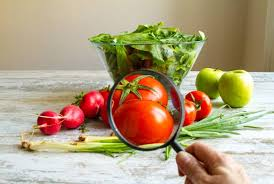

<thml>
<head>
<title>首頁</title>
</head>
<body>
食品安全是一門跨學科領域，專門探討在食品加工、存儲及銷售等步驟中，各方能如何保障食品衛生與食用安全、降低疾病隱患及防範食物中毒。<br> 

<hr>     
食品安全的維護受到世界衛生組織以及世界農糧組織之重視。它們於1963年共同成立了國際食品法典委員會[1]，針對保護消費者健康及確保食品貿易之公平進行<br>

<p>
<iframe width="560" height="315" src="https://www.youtube.com/embed/M53GSk42L54" frameborder="0" allow="accelerometer; autoplay; encrypted-media; gyroscope; picture-in-picture" allowfullscreen></iframe>
<p>

<a href="2hd.html">連到第二頁</a>
<a href="3hd.html">連到第三頁</a>
<a href="4hd.html">連到第四頁</a>
<a href="5hd.html">連到第五頁</a>

</body>
</thml>